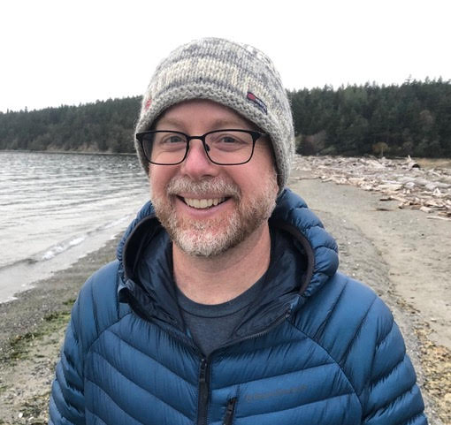

About Us
Cath Abbott
Donald Baird
Pedro Baja
Hideyuki Doi
Nicole Fahner
Kelly Goodwin
Mehrdad Hajibabaei
Centre for Biodiversity Genomics @ Biodiversity Institute of Ontario Department of Integrative Biology, University of Guelph, CANADA

Dr. Mehrdad Hajibabaei’s research focuses on the application of genomics information to biodiversity analysis, ranging from the elucidation of deep branches of the tree of life to the development and application of DNA-based tools for species identification (e.g., DNA barcoding, DNA metabarcoding). Mehrdad is one of the pioneers using high-throughput genomics technologies such as Next-Generation Sequencing (NGS) for the assessment of biodiversity in samples. These samples vary from bulk environmental water, soil, and sediments. He has played a leadership role in establishing and managing large-scale research projects and collaborative networks such as the Canadian Barcode of Life Network and the International Barcode of Life (iBOL).
Freshwater Biomonitoring
Ryan Kelly
School of Marine and Environmental Affairs University of Washington, USA

Ryan Kelly is the Director of the eDNA Collaborative at the University of Washington and a faculty member in the UW School of Marine and Environmental Affairs. His work with eDNA focuses on quantitative analysis of ecological and management questions, in the service of moving eDNA science into routine practical application around the world.
Marine Biomonitoring | Ecological Studies
Katy Klymus
Ntanganedzeni Mapholi
Michio Kondoh
Tohoku University, Japan

Dr. Kondoh leads ANEMONE, a comprehensive biodiversity monitoring project in Japan that utilizes eDNA metabarcoding. It has conducted over 5,000 surveys at 1,000 sites, identifying and categorizing over 900 fish taxa. Citizen participation, standardized protocols, and a dedicated public-access database are key components. ANEMONE aims to leverage eDNA monitoring data with a consortium for innovative solutions in various fields.
Ecological Studies
Florian Leese
Kristian Meissner
Toshifumi Minamoto
Teresita Porter
Centre for Biodiversity Genomics @ Biodiversity Institute of Ontario University of Guelph, CANADA
Terri uses DNA-based methods to survey complex communities in from environmental samples such as soil, water, and stream-bottom communities. She has experience using and developing new molecular biology and bioinformatic methods such as the MetaWorks multi-marker metabarcode pipeline as well as numerous curated reference sequence sets to facilitate probabilistic taxonomic assignment. Currently working as part of the “Sequencing The Rivers For Environmental Assessment and Monitoring” (STREAM) project at the University of Guelph.
Bioinformatics Method Development | Ecological Studies | Freshwater Biomonitoring